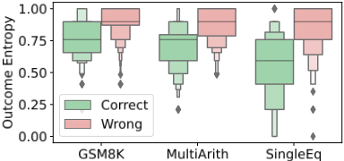
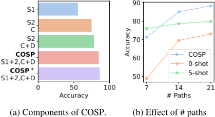
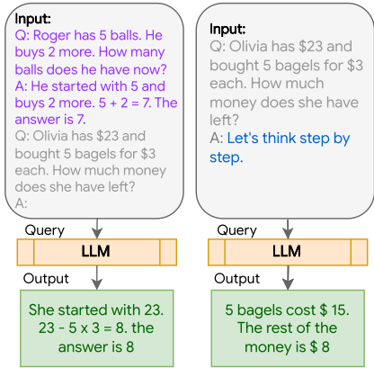
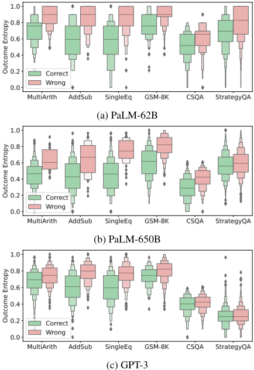
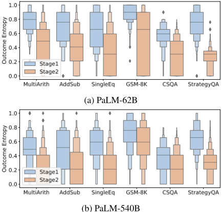

Better Zero-Shot Reasoning with Self-Adaptive Prompting
基于 Self-Adaptive Prompting 的更优 Zero-Shot 推理
简介
Few-shot CoT 依赖人工示例且对示例选择高度敏感，Zero-shot CoT 无需标注但缺乏引导、性能受限。论文提出 COSP（Consistency-based Self-adaptive Prompting），在只有无标注 query 的 zero-shot 设定下，从 LLM 自身输出中自动构建 in-context 示例：Stage 1 用 Zero-shot CoT 对每个问题多次采样，以 self-consistency 的 outcome entropy 作为正确性代理，结合重复度惩罚与多样性约束贪心选出高质量示例；Stage 2 将示例拼入上下文二次查询，并对两阶段输出做多数投票。在 PaLM-62B/540B 与 GPT-3 的 6 个推理任务上，COSP 较 Zero-shot CoT + self-consistency 平均提升 10%~15%，多数任务追平或超过人工示例的 Few-shot CoT，且额外计算成本可忽略。对团队而言，这是'用模型自身输出自动优化提示上下文'的代表性技术，可直接借鉴到示例库构建与提示自动优化流程。
问题
Few-shot CoT 的性能对 in-context 示例的选择敏感，人工设计示例需要大量人力，且随着下游任务增多，逐任务手工标注示例的成本迅速上升；Zero-shot CoT 虽无需人工标注但缺乏引导，常产生错误的推理步骤。论文要解决的问题是：在只有无标注输入 query、无法访问 ground-truth 标签的 zero-shot 设定下，自动从 LLM 自身生成的输出中筛选并构建高质量 in-context 示例，以提升推理性能并减少人工投入。
方法
COSP 是一个两阶段、纯推理侧（黑盒、仅需前向推理）的提示构建算法。Stage 1：对每个测试问题用非零温度运行 Zero-shot CoT 采样 m=7 条推理路径，构建候选示例池；先用 self-consistency 多数投票剪枝（只保留导向多数预测的 rationale），再用归一化 outcome entropy 度量模型置信度（低熵与正确性正相关），并基于辅助句向量模型（Sentence-T5-large）计算短语间余弦相似度来惩罚语义级重复，配合多样性项，经 z-score 归一化后用贪心前向选择构建 K（典型为 5）个示例（λ=0.2，全实验未调参）。Stage 2：将选中示例拼接到测试问题前再次查询，对两阶段输出做多数投票得到最终预测。另有两个变体：COSP+ 按 Stage 1 熵值自适应分配每题示例数（高熵难题给更多示例）；COSP-FS 在有少量标注示例时以其初始化并继续自动扩充。
关键结果
在 PaLM-62B 与 GPT-3 上，6 个算术与逻辑推理任务（AddSub、MultiArith、GSM-8K、SingleEq、CSQA、StrategyQA）的平均准确率较 Zero-shot CoT + self-consistency 基线提升 10%~15%；PaLM-540B 上提升超过 3%
在几乎所有任务上，COSP 与使用人工标注示例的 Few-shot CoT（含 self-consistency）持平或更优，且所有提升以可忽略的额外计算成本实现
GPT-3 的 AddSub 任务上，COSP 所选示例较 Zero-shot CoT + self-consistency 提升 18%，而 Auto-CoT 所选示例导致性能下降
COSP+ 在 PaLM-62B 的 6 个任务中 5 个带来进一步提升，但在 GSM-8K 上因额外示例含更多错误反而降低性能
outcome entropy 与正确性显著相关：除 GPT-3 上的 StrategyQA 外，所有任务-模型组合的熵-准确率 Point-biserial 相关检验 p 值低于 10^-5
COSP-FS 在 GSM-8K 上以 5 个标注示例起步、再自动选 3 个生成示例，恢复了 COSP 在该困难任务上的有效性
创新点
与 Auto-CoT 仅基于问题嵌入聚类选择示例、无法控制生成 rationale 质量不同，COSP 首次将 self-consistency 的 outcome entropy 作为正确性的无监督代理来打分与筛选示例，并显式惩罚重复、鼓励多样性；与 STaR、Huang et al. 等需要微调海量模型的方法不同，COSP 将 LLM 视为黑盒、只需前向推理，适用于 inference-only API 场景；此外提供 COSP+（按熵自适应分配示例数）与 COSP-FS（少量标注扩展）两个变体。
团队参考意义
相关度级别：high
命中能力域：3.2 提示工程 | 3.1 上下文工程与记忆 | 3.5 评测与可靠使用
理由：论文直接命中 3.2 提示工程：在无标注条件下自动优化 in-context 示例的选择与组合，属于自动提示优化与 CoT 推理提示的核心技术；示例集 S 的构建本质上是结构化上下文组织（3.1），其'一致性+多样性+重复度'打分函数可直接用于团队的示例库与提示资产管理；同时论文以可忽略的额外推理成本换取大幅提升、用 outcome entropy 同时作为正确性代理与题目难度信号（3.5 的成本效率与可靠使用）。团队专注'把模型用好'而非训练模型，COSP 是纯推理侧、黑盒 API 可用的方法，与团队技术栈高度吻合。
建议动作：深入精读并做内部分享
中文全文
arXiv:2305.14106v1 [cs.CL] 2023年5月23日
Better Zero-Shot Reasoning with Self-Adaptive Prompting
基于自适应提示的更优零样本推理
Xingchen Wan ∗ 1, 3, Ruoxi Sun 1, Hanjun Dai 2, Sercan Ö. Arık 1, Tomas Pfister 1
1 Google Cloud AI Research
2 Google DeepMind
3
牛津大学工程科学系 {xingchenw,ruoxis,hadai,soarik,tpfister}@google.com
Abstract
现代大型语言模型（LLM）已在复杂任务上展现出令人印象深刻的能力，这通常是通过类似人类的逐步推理实现的。这得益于其强大的少样本（few-shot）与零样本（zero-shot）能力——它们既能有效地从少量人工制作的完整回答（“上下文示例”，in-context examples）中学习，也能通过专门设计的触发器被引导自发地进行推理。然而，人们也观察到一些局限性。首先，少样本设置下的性能对示例的选择十分敏感，而示例的设计需要大量的人力投入。此外，鉴于 LLM 的下游任务多种多样，为每个任务手工制作标签可能十分困难或费时费力。其次，虽然零样本设置无需手工制作，但由于缺乏对 LLM 的引导，其性能受到限制。为了解决这些局限性，我们提出了一种新颖的 LLM 提示设计方法——基于一致性的自适应提示（Consistency-based Self-adaptive Prompting，COSP）。COSP 既不需要人工制作的回答，也不需要真实标签（ground-truth labels），而是通过精心设计的、融合一致性、多样性与重复性的准则，从 LLM 的零样本输出中选择并构建示例集合。在三种不同 LLM 的零样本设置中，我们表明：仅使用 LLM 自身的预测结果，COSP 相比零样本基线可将性能提升高达 15%，并且在一系列推理任务上达到或超过少样本基线。
1 Introduction
在这项工作中，我们的重点是在通用的零样本（zero-shot）设置下改进 LLM 的推理，该设置可以访问输入查询但没有标签（即 zero-shot (Xian et al., 2017)）。由于前文所述的通用性，我们对这一设置尤为感兴趣；但鉴于缺乏外部引导，它也是一个非常具有挑战性的设置。为了解决这一问题，我们不依赖于简单的触发语或人工制作的示例，而是提出用 LLM 自身生成的输出对其加以提示：我们首先收集由 LLM 使用零样本思维链（Zero-shot CoT）针对测试问题生成的推理依据（rationale）与答案池，然后从中选出最适合用于上下文学习（in-context learning）的问题与答案，类似于少样本思维链（Few-shot CoT）。然而，选择纳入哪些生成的推理依据绝非易事，如图 1 所示：该问题不仅继承了上文针对少样本场景所识别的所有挑战，还带有额外的困难，即自生成的示例（demonstrations）本身并不完美。假设标签完美的检索方法 (Rubin et al., 2022; Liu et al., 2022) 已被证明在这种设置下表现比随机还差 (Zhang et al., 2022)，而以往的工作则通过仅关注表面文本相似性以及问题嵌入（embedding）的多样性来绕开这一问题 (Zhang et al., 2022)，正如我们所展示的，在大多数初始生成输出都错误的情况下，这种做法可能造成误导。
为应对这些挑战，我们提出了 COSP（Consistency-based Self-adaptive Prompting，基于一致性的自适应提示），这是一种仅需无标注样本（这类样本通常获取成本低廉，例如可通过持续、即时的用户查询收集获得）且无需任何标注示例即可取得强劲性能的算法，同时在少量标注示例变得可用时，它还具备进一步提升性能的能力。该算法由两个阶段组成。在第一阶段，COSP 通过 Zero-shot CoT 收集 LLM 对测试问题的回答池。我们利用这些回答计算每个问题的结果熵（outcome entropy），这是一种受自一致性（self-consistency）(Wang et al., 2022a) 启发的度量指标。随后，该指标被用于以无监督的方式识别合适的问题-推理依据对。
在第二阶段，我们对所有测试样本再进行一轮处理，但这次将选出的问题-推理依据对作为上下文示例。
我们在一系列任务上使用三种不同的 LLM 对 COSP 进行了实验。我们展示了针对 6 个算术- 的平均准确率提升达 10–15%。
[问题] Henry 有 11 美元。过生日时他又得到了 18 美元，但花 10 美元买了一个新游戏。他现在有多少钱？
[示例1] Q: John 从一位朋友那里买了 21 个游戏，又在车库旧货出售中买了 8 个。如果其中 23 个游戏无法正常使用，他最后有多少个完好的游戏？ A: 让我们一步一步思考。他总共买了 21 + 8 = 29 个游戏。他有 29 - 23 = 6 个完好的游戏。 ✅
[Demo2] 问：John 从一位朋友那里买了 21 个游戏，又在一次车库旧货出售中买了 8 个。如果其中有 23 个游戏无法正常运行，他最终得到多少个完好的游戏？答：让我们一步一步思考。他总共买了 21 + 8 = 29 个游戏。他总共买了 21 + 8 = 29 个游戏。他总共买了 21 + 8 = 29 个游戏。他有 29 - 23 = 6 个完好的游戏。他有 29 - 23 = 6 个完好的游戏。✅
[Demo3] 问：Faye 从菜园里摘了 23 根胡萝卜，她的妈妈摘了 5 根。如果只有 12 根胡萝卜是好的，那么有多少根胡萝卜是坏的？答：让我们一步一步思考。23 + 5 = 28 28 - 12 = 16 16 / 2 = 8 8 / 2 = 4 4 / 2 = 2 2 / 2 = 1 1 / 2 = 0。❌
| Input | Output |
|---|---|
| Q: [Question] A: Let's think step by step. | How much money does he have now? Henry has 11 + 18 - 10 = 27. ❌ |
| [Demo1] Q: [Question] A: Let's think step by step. | He had 11 + 18 = 29 dollars. He spent 10 dollars on a game, so he has 29 - 10 = 19 dollars. ✅ |
| [Demo2] Q: [Question] A: Let's think step by step. | He had 11 dollars. He had 11 dollars. He had 11 dollars. He had 11 dollars…. ❌ |
| [Demo3] Q: [Question] A: Let's think step by step. | 11 + 18 = 29 29 - 10 = 19 19 / 2 = 9 9 / 2 = 4 4 / 2 = 2 2 / 2 = 1 1 / 2 = 0 ❌ |
| [Demo3] [Demo1] Q: [Question] A: Let's think step by step. | 11 + 18 = 29. 29 - 10 = 19. ✅ |
| Input | Output |
算术与逻辑推理任务上，相比 PaLM-62B 和 GPT-3 中零样本思维链（Zero-shot CoT）结合自一致性（self-consistency）的基线取得提升，在 PaLM-540B 上提升超过 3%。所有这些都是以可忽略不计的额外计算开销实现的。在许多情况下，COSP 的表现与使用人工制作的上下文示例的少样本基线相当，甚至更好。
2 Preliminaries
思维链（Chain-of-thought, CoT）提示。少样本 CoT 提示（Wei et al., 2022b）在测试问题前附加一系列由相关已解答问题构成的上下文示例作为提示。Kojima et al.
![Figure 2: The overall procedure of COSP. In Stage 1 ( Left , §3.2), we run Zero-shot CoT multiple times on each question to generate a pool of demonstrations (each consisting of the question x ( i ) , generated rationale r ( i ) j and predicted answer ˆ y ( i ) j ) and assign a score to each. Note that different rationales leading to the same final answer are marked the same color in 'Outputs' blocks (described in §3.2). In Stage 2 ( Right , §3.3), we augment the current test question for which we are interested in finding in-context examples (boxes shaded in blue) with a number of in-context demonstrations. These consist of test questions and selected Stage 1 outputs whose predicted answers ˆ y ( i ) j are the majority predictions for that question that minimize the score defined in Eq. (8) with the procedure described in §3.2. The augmented test question is used to query the LLM a second time. Finally, a majority vote over outputs from both stages forms the final prediction.](assets/a409/figures/fig_1.png)
（2022）将这一思路推广到少样本设置之外，提出零样本 CoT（Zero-shot CoT），并证明即使只是简单地在测试问题后拼接一个触发短语（例如 "Let's think step by step"），也能在没有人工制作示例的情况下引导大语言模型（LLM）输出中间步骤（我们在附录 A 的图 5 中展示了少样本与零样本 CoT 的示意图）。我们的工作建立在这些工作之上并对其加以改进：我们采用与 Kojima et al. (2022) 相同的零样本设置，同时通过对 LLM 自身输出的创新性运用，实现了 Wei et al. (2022b) 形式的上下文学习（in-context learning）。
自一致性（Self-consistency）。自一致性（Wang et al., 2022a; Li et al., 2022b）通过对多条解码得到的推理路径进行多数投票来近似 LLM 的边缘分布，已被证明能在各种任务上带来显著的性能提升。它与零样本或少样本 CoT 均兼容：首先在 LLM 解码中通过非零温度引入概率解码，然后从 LLM 后验中采样 m 条推理路径，每条路径由一个推理依据-答案对 ( r ( i ) , ˆ y ( i ) ) 组成：
其中 x ( i ) 为测试问题，c 表示提示模板的一般格式（例如少样本 CoT 中上下文示例的选择，或零样本 CoT 中的触发短语），θ 表示对 LLM 进行参数化的权重。随后，获得多数（更准确地说，是相对多数）投票的预测被选为最终预测：
其中 I ( · , · ) 为指示函数。我们将自一致性作为算法的有机组成部分加以使用和扩展。我们不止于简单地采用多数投票，还将其作为选择上下文示例的关键准则，我们将在 §3 中对此进行详细讨论。
3 Consistency-based Self-adaptive Prompting (COSP)
正如引言中所讨论的，我们的目标是开发一种方法，通过从 LLM 自身生成的输出中自动选择上下文示例，来提升 LLM 的零样本推理能力并减少人工投入。为了有效实现这一目标，我们提出了 COSP（整体流程如图 2 和算法 1 所示）。
在本节中，我们首先介绍问题设定，随后详细描述该算法的两个阶段及其关键组成部分。
3.1 Notations & Problem Setup
我们假设存在一个测试集 D，其中包含 |D| = N 个测试样本。给定一个 LLM 和一条测试查询 x ( i ) ∈ D（测试标签 y ( i ) 对 LLM 不可用），我们希望生成一个由 K 个示例组成的集合 S，其中每个示例 s k 是另一条测试问题 x ( i k ) ∈ D \ i、由 LLM 生成的推理依据（ r ( i k ) ）与最终预测（ ˆ y ( i k ) ）的拼接（通常通过零样本思维链（Zero-shot CoT）实现，具体细节见 §3.2）：
随后，集合 S 被作为“上下文”前置到测试问题 x i 之前，作为对 LLM 的引导：
然后再次对 ˜ x ( i ) 进行查询（即上下文学习（in-context learning））。目标是在不访问真实标签的情况下，构建能够使 LLM 性能最大化的上下文示例集合 S。
3.2 Stage 1: Building the Pool of Generated Responses & the Demonstration Selector
构建候选池。我们首先针对测试问题 D 构建一个响应池 P，示例 S 将从中选取。P 中的每个元素都是一个符合式 (3) 所定义格式的候选示例。为此，我们利用 LLM 的零样本能力，在所有测试问题上运行零样本思维链（Zero-shot CoT）(Kojima et al., 2022)。对于每个测试问题 x ( i )，我们以非零温度对 LLM 进行 m 次查询，以根据式 (1) 提取多条推理路径 { r ( i ) j } m j =1 以及可能不同的答案 { ˆ y ( i ) j } m j =1。
在此阶段，对每个问题采样 m 条路径将得到 mN 个候选。
用于示例选择的一致性。构建好候选池后，我们从中选取 S。这一选择过程绝非易事——不仅已知上下文学习对示例的选择十分敏感 (Wei et al., 2022b; Liu et al., 2022)，我们还面临额外的挑战：(1) 我们必须从庞大的候选集合 P 中选出 K（通常很小且 ≤ 10）；(2) 候选池并不完美：在无法访问真实标签的情况下，P 中的响应可能存在错误，并可能对 LLM 产生误导。
为解决这些问题，我们提出将自洽性（self-consistency）同时用于 (1) 对候选池 P 进行剪枝，以及 (2) 在缺乏真实标签的情况下选取示例。借鉴 Wang et al. (2022a) 提出的“多数预测更可能是正确的”这一洞见，对于每个测试问题 x ( i )，我们首先根据式 (2) 从所有预测 { ˆ y ( i ) j } m j =1 中计算出其多数投票预测 ˆ y ( i )，仅保留导向多数投票预测的推理依据（这些更可能是正确的），并从 P 中剪除其余的推理依据-预测对（这些更可能是错误的）。遵循先前工作 (Wei et al., 2022b)，我们还使用进一步的启发式规则（详见附录 B）从 P 中移除明显糟糕的候选（例如，在算术任务中不含数字的响应，或过短和/或支离破碎的响应）。形式化地，剪枝后，对于测试问题 x ( i )，集合 P 由下式给出：
其中，j 遍历第 i 个问题中所有导向多数投票预测 ˆ y ( i ) 且未因其他原因被排除的 ¯ m ( i ) 条推理路径。
自洽性（self-consistency）的第二种用法源于这样一个洞察：它近似地刻画了模型对其预测的不确定性程度。这一概念与伪标签（pseudo-labelling）(Lee et al., 2013; Shi et al., 2018; Rizve et al., 2021) 和熵最小化（entropy minimization）(Grandvalet and Bengio, 2004) 在概念上相关。直观地说，如果 LLM 即使在不同的推理路径下也反复输出相同的预测，那么可以预期它对其预测更有信心，我们应该赋予更强的信念，认为该预测是正确的或至少是合理的（“一致的预测更可能是正确的”）。为了刻画模型的不确定性，对于一个具有 m 个最终答案的问题 x ( i )，我们假设其中存在 n ≤ m 个唯一答案 ˆ y ( i ) 1 , ..., ˆ y ( i ) n，我们按如下方式计算归一化熵（normalized entropy）：
其中 α 用于对唯一答案进行索引，˜ p(ˆ y ( i ) α ) 是唯一答案 算法 1 COSP。阶段 1（§3.2）和阶段 2（§3.3）的步骤分别以兰花紫和桃色标记。COSP + 特有的步骤（参见 §3.3）以深橙色标记。
ˆ y ( i ) α 在全部 m 个答案中的经验频率，并且熵通过 log m（即当所有预测彼此都不同时的（负）最大熵）归一化到 [0, 1]。
如图 3 所示，我们确实发现，归一化熵在许多不同的任务上都是一个良好的代理指标，在这些任务中，低熵与正确性呈正相关。

惩罚重复。式 (6) 对测试问题 x ( i ) 进行评分，但对于每个 x ( i )，尤其是那些结果熵较低的问题，针对多数预测存在多条推理路径 r ( i ) j。虽然这些路径都导向相同的最终答案，但我们发现它们作为上下文示例的适宜性却各不相同。一个关键观察是，重复性的示例往往会导致更差的性能，如图 1 中的示例所示（参见 Demo2）。我们假设，充当示例的重复性响应会创建一种强烈但虚假的模式，LLM 容易对该模式过拟合，往往导致性能的灾难性恶化。
为了解决这一问题，我们首先过滤掉涉及自我提问（self-questioning）的响应，据我们观察，自我提问往往会导致重复，或促使 LLM 去回答所生成的问题而非原始问题。我们还引入了一种量化度量，即将示例按标点符号（' [.,?!] '）分隔成短语。假设我们有 Q 个短语 *，我们按如下方式计算重复度（repetitiveness）：
其中 W ∈ R Q × Q + 是所有短语对上的相似度矩阵，且 W ab = S c ( ϕ ( q a ) , ϕ ( q b )) ，其中 S c ( · , · ) 计算余弦相似度，ϕ ( q a ) 和 ϕ ( q b ) 表示第 a 个和第 b 个短语的向量嵌入（vector embedding），通常通过一个辅助的小型语言模型获得。根据式 (7)，该矩阵通过对非对角元素取平均来汇总，从而得到回答中任意两个短语之间的平均相似度。我们注意到，也可以改用其他在解码时对重复进行惩罚的技术来替代（例如硬性或软性 n-gram 阻断 (Klein et al., 2017; Paulus et al., 2017)）。我们采用所提出的方法，因为它还能捕捉语义层面的重复，而我们发现这类重复比逐字重复更为常见，尤其是在使用非零温度（temperature）时。
总体设计与构建 S 。在定义了一致性（consistency）度量（式 (6)）与重复性（repetitiveness）度量（式 (7)）之后，对于由问题 x ( i ) 、推理依据 r ( i ) j 和（多数）预测 ˆ y ( i ) 拼接而成的候选示例 p ∈ P，所提出的分数如下：
其中 λ 是一个权衡超参数，在所有实验中均被设置为 0.2。为确保式 (8) 中各项具有可比较的量级，我们
* 当 Q = 1 时，重复性无定义。在这种情况下，我们为其分配所有重复性有定义的示例中的最小自重复分数。
Algorithm 2 Building S for K ≥ 2 .
采用强化学习 (van Hasselt et al., 2016) 和 NLP (Deng et al., 2022) 中常用的 z-score 归一化方法，将每一项替换为其各自的 z-score，均值和标准差在 P 上计算。为了选择单个上下文示例（K = 1），我们利用评分函数的最小值点 p∗ = arg min p∈P F(p)。不过，更常见的情况是我们希望选择多个示例，这就导致了一个组合选择问题。出于计算可行性的考虑，我们采用如 Algorithm 2 所述的贪心前向选择过程 (Caruana et al., 2004)。我们用 p∗ 初始化 S，并以贪心的方式选择以下修改后目标函数的最小值点：
其中 S k-1 是已选出 k-1 个元素、部分构建的示例集合 S，而
是一项通过惩罚与先前示例相似的示例来鼓励 S 中问题类型和推理模式多样性的项。我们还额外约束 S 不应包含针对同一问题的多条推理路径。重复执行该算法，直到 S 的全部 K 个示例都被选出为止。
3.3 Stage 2: Query with Generated In-context Demonstrations
在选定 S 之后，在阶段 2 中，我们将这些示例拼接并前置到测试问题之前（式 (3) 和 (4)），并以额外的 m 次重复再次查询大语言模型（LLM）。随后，将两个阶段预测结果的多数投票作为每个问题的最终预测输出。
结果熵作为难度的代理指标。我们在 §3.2 中使用熵（式 (6)）来选择示例。然而，它也是衡量测试问题对 LLM 而言难度的一个自然标尺，因为更高的熵（因而更高的不确定性）意味着 LLM 可能需要针对该问题的更多示例。为此，我们还在 §5 中实验了 COSP 的一个变体，称为 COSP +（算法 1），其特点是为每个问题自适应地分配与其在阶段 1 中的零样本熵成正比的上下文示例数量，熵较高的问题会获得更多示例。值得注意的是，在 COSP 中选择更多示例很容易，因为我们只需贪心地优化式 (8) 直到达到更大的 K 即可；而对于少样本思维链（Few-shot CoT）这类方法，示例的数量同时也是"shots"的数量，增加该数量需要手工制作更多完整的示例。
扩展到少样本。虽然我们是在零样本设置下构建 COSP 的，但它也可以被适配到少样本设置（我们将其称为 COSP-FS）中，例如在该设置下有少量带标注的示例 Q 可用，而我们希望在不进行进一步人工标注的情况下用更多示例对其进行扩充。关键的修改有：(1) 在阶段 1 中，我们不再用零样本 CoT 查询 LLM（算法 1 中的第 4 行），而是使用带 Q 的少样本 CoT；(2) 在构建 S 的过程中（§3.2），我们用 Q 而非空集进行初始化。我们在 §5 中对 COSP-FS 进行了实验。
关于测试集规模的说明。值得注意的是，虽然我们假设整个测试集对 COSP 可用，并在此假设下进行实验（正如我们将在 §5 中展示的）以便与基线方法进行直接比较，但 COSP 也可以仅在部分测试数据上工作，或在无标注数据仅被持续收集的在线模式下工作。只需利用可用数据执行 COSP 流程的阶段 1，即可轻松实现这一点。在阶段 2 中，仅当测试查询在阶段 1 开始时已经可用，我们才对两个阶段进行多数投票；否则，则改为仅对阶段 2 进行多数投票。
4 Related Works
There have been several recent works that also aim to improve LLM reasoning using the models' own outputs. STaR (Zelikman et al., 2022) is one of the first works to bootstrap reasoning from LLMs: starting from a small number of labelled data, STaR prompts the LLMs to generate rationales over the large corpus of untrained data. However, STaR requires human verification on the generated ratioa Madaan and Yazdanbakhsh (2022). b Wang et al. (2022a): Significantly more ( 40 ) paths sampled.
| Model.Setting Method..# Paths | PaLM-62B.0-shot.0-shot CoT.14 | PaLM-62B.0-shot.Auto- CoT.14 | PaLM-62B.0-shot.COSP (Ours).7+7 | PaLM-62B.5-shot.5-shot CoT.14 | PaLM-62B.Prev.8-shot CoT. | PaLM-540B.0-shot.0-shot CoT.14 | PaLM-540B.0-shot.Auto- CoT 14. | PaLM-540B.0-shot.COSP (Ours).7+7 | PaLM-540B.5-shot.5-shot CoT 14. | PaLM-540B.Prev.8-shot CoT. |
|---|---|---|---|---|---|---|---|---|---|---|
| MultiArith | 67.2 | 9.4 | 85 | 81 | - | 95.2 | 99 | 98.8 | 96 | 99.3 b |
| AddSub | 69.1 | 73.2 | 78.9 | 72.4 | - | 88.9 | 89.1 | 89.9 | 86.6 | 93.7 b |
| SingleEq | 74.4 | 77.8 | 78.7 | 79.8 | - | 88.6 | 85.6 | 90.4 | 89.2 | - |
| GSM-8K | 20.9 | 9.2 | 30.2 | 30.3 | 27.4 a | 68.5 | 71.4 | 71.9 | 64.3 | 74.4 b |
| CSQA | 46.5 | 68.2 | 60.2 | 66.8 | - | 74.2 | 79.4 | 76.4 | 80.7 | 80.7 b |
| StrategyQA | 57.2 | 59.4 | 64.7 | 67.9 | - | 66 | 75.7 | 75.2 | 81.4 | 81.6 b |
| (Average) | 55.88 | 49.55 | 66.28 | 66.37 | - | 80.25 | 83.37 | 83.77 | 83.03 | - |
| Model.Setting Method..# Paths | PaLM-62B.0-shot.0-shot CoT.14 | PaLM-62B.0-shot.Auto- CoT.14 | PaLM-62B.0-shot.COSP (Ours).7+7 | PaLM-62B.5-shot.5-shot CoT.14 | PaLM-62B.Prev.8-shot CoT. | PaLM-540B.0-shot.0-shot CoT.14 | PaLM-540B.0-shot.Auto- CoT 14. | PaLM-540B.0-shot.COSP (Ours).7+7 | PaLM-540B.5-shot.5-shot CoT 14. | PaLM-540B.Prev.8-shot CoT. |
nale. More recently, Huang et al. (2022) relies on self-consistency to improve LLMs by fine-tuning on a large number of generated questions and rationales. However, both works rely on fine-tuning of massive models, which requires access to model weights and is much more expensive. In contrast, our method can treat the model as a black box and only requires forward passes. Other concurrent related works include Honovich et al. (2022) and Wang et al. (2022b). However, while related methodologically to our method, these papers focus on fundamentally different problems of data generation and instruction following.
For the in-context learning setup (Brown et al., 2020; Wei et al., 2022a; Radford et al.), various methods have been proposed, typically to retrieve relevant demonstrations from a relatively large number of labelled examples (Rubin et al., 2022; Su et al., 2022). However, Zhang et al. (2022) shows that with imperfect labels, nearest neighborstyle retrieval underperforms random selection and propose Auto-CoT, one of the few existing works that are fully comparable to COSP. Auto-CoT also uses models' zero-shot outputs as in-context demonstration by selecting the responses to the questions that are the k -means centroids in the embedding space from an auxiliary language model (a concurrent work, Li et al. (2022a) uses a similar clustering approach). However, by selecting based on question embedding only, Auto-CoT has no control over the quality of the generated rationales , and is thus prone to generating erroneous and misleading demonstrations; we empirically compare to it in §5. Another concurrent work (Weng et al., 2022) proposes self-verification , which is a zero-shot reasoning verifier to recover conditions from the predictions. However, it only works when there is a unique correct condition that results in the correct answer (such as arithmetic questions), but is not applicable when there are multiple plausible conditions.
5.1 Experimental Setup
数据集与任务。我们考虑以下算术与逻辑推理任务：AddSub（Hosseini et al., 2014）、MultiArith（Roy and Roth, 2016）、GSM-8K（Cobbe et al., 2021）、SingleEq（Koncel-Kedziorski et al., 2015）、CSQA（Talmor et al., 2019）以及 StrategyQA（Geva et al., 2021）。这些数据集的许可证列于附录 B 中。
大语言模型（LLM）。我们使用 3 个 LLM 进行实验：具有 620 亿参数的 PaLM（PaLM-62B）与具有 5400 亿参数的 PaLM（PaLM-540B）（Chowdhery et al., 2022）（两者均量化至 int8 精度），以及具有 1750 亿参数的 GPT-3（code-davinci-001）（Brown et al., 2020; Chen et al., 2021）。更多细节请读者参阅附录 B。
| Model.Setting Method.# Paths | GPT-3 ( code-davinci-001 ).0-shot CoT.14 | GPT-3 ( code-davinci-001 ).0-shot Auto- CoT.14 | GPT-3 ( code-davinci-001 ).COSP ( Ours ).7+7 | GPT-3 ( code-davinci-001 ).5-shot 5-shot CoT.14 | GPT-3 ( code-davinci-001 ).Prev 8-shot CoT. |
|---|---|---|---|---|---|
| MultiArith | 50.3 | 78.5 | 80.7 | 60.7 | 82.7 b |
| AddSub | 43.5 | 31.9 | 61.5 | 63.3 | 67.8 b |
| SingleEq | 48.8 | 58.1 | 64.8 | 65.9 | - |
| GSM-8K | 10.2 | 6.6 | 8.7 | 16.7 | 23.4 b |
| CSQA | 29.2 | 50.9 | 55.4 | 53 | 54.9 b |
| StrategyQA | 47.8 | 55.8 | 52.8 | 55.4 | 61.7 b |
| (Average) | 38.32 | 46.96 | 53.98 | 52.6 | - |
| Model.Setting Method.# Paths | GPT-3 ( code-davinci-001 ).0-shot CoT.14 | GPT-3 ( code-davinci-001 ).0-shot Auto- CoT.14 | GPT-3 ( code-davinci-001 ).COSP ( Ours ).7+7 | GPT-3 ( code-davinci-001 ).5-shot 5-shot CoT.14 | GPT-3 ( code-davinci-001 ).Prev 8-shot CoT. |
b Wang et al. (2022a)：采样了显著更多的（40）条路径。
基线方法。我们将带自一致性（self-consistency）与不带自一致性的零样本思维链（Zero-shot CoT）（Kojima et al., 2022）（Wang et al., 2022a），以及 Auto-CoT（Zhang et al., 2022）作为对比。Auto-CoT 原本并不使用自一致性，但为了公平比较，并鉴于自一致性能够显著提升 LLM 的性能，我们还加入了经自一致性增强的 Auto-CoT 基线（原始的不带自一致性的 Auto-CoT 性能较差，其结果报告于附录 C.2 中）。除零样本基线外，我们还加入了带自一致性的少样本思维链（Few-shot CoT）（Wei et al., 2022b）作为对比，其中对于所有数据集，我们均使用从 Wei et al. (2022b) 所提供的示例列表中随机选取的 5 个手工编写的示例，以与 COSP 和 Auto-CoT 中的 5 个生成示例相匹配。对于 COSP，我们在阶段 1 和阶段 2 中分别采样 m = 7 条推理路径；而对于带自一致性的 Zero-shot CoT、Few-shot CoT 与 Auto-CoT 实验，等效地我们对每个问题使用 14 条推理路径。除复现的基线之外，我们还引用了表 1 和表 2 中 Prev 列下先前已发表的基线，这些基线使用了更多的标注示例和/或采样路径，二者均可带来进一步的性能提升，但需付出额外代价。我们在 §5.2 中表明，当资源可用时，COSP 同样可以利用更多的采样路径。如 §3.2 所述，我们在所有实验中使用 λ = 0.2（式 (8)），而不进行进一步的超参数调优——选取该值是为了反映我们对目标函数各项相对重要性的先验信念。尽管通过调优该项有可能获得更进一步的性能提升，但为了与基线进行公平比较，本工作未对此进行研究。
5.2 Results
主要结果讨论。我们在表 1 和表 2 中分别展示了 PaLM-62B、PaLM-540B 和 GPT-3 上的结果，并在附录 D 中给出所找到示例的一些实例。由于我们发现自一致性（self-consistency）在所有情况下都能提升性能，因此在这些表中我们仅报告带自一致性的结果；不带自一致性的结果请读者参见附录 C.2。在所有情况下，COSP 的表现均优于零样本思维链（Zero-shot CoT）基线，其中在 PaLM-62B 和 GPT-3 上可见尤为显著的提升，相比带自一致性的 Zero-shot CoT 基线取得了 10% ∼ 15% 的平均提升。值得注意的是，尽管 COSP 是在没有真实标签、挑战性大得多的设置下运行的，但在几乎所有使用标签的任务中，COSP 的表现都与少样本思维链（Fewshot CoT）相当甚至更好。我们认为，较小模型中所观察到的大幅提升显著缩小了它们与超大模型（如 PaLM-540B）之间的性能差距；鉴于前者在计算成本和普遍可获得性方面的强大优势，这些提升可能在实践中产生尤为显著的影响。此外，我们发现 COSP 具有鲁棒性，在除一种情况外的所有情况下都持续优于 Zero-shot CoT 基线，而 Auto-CoT 有时会使性能下降。我们在附录 C.5 中进行了失败分析，结果表明，通过将自一致性用作正确性的代理，在大多数情况下，即使该任务在零样本设置下对大语言模型（LLM）而言非常具有挑战性，COSP 也能够识别出推理合理的输出并将其用作上下文示例（in-context examples）。相比之下，Auto-CoT 更容易选出错误的示例；尽管 Zhang et al. (2022) 声称这些错误对性能的影响微乎其微，但我们发现其影响非常依赖于具体的模型和任务，该说法对更大的模型（如 PaLM-540B）和更容易的任务成立。然而，在更困难的任务或更小的模型上，我们发现错误的示例往往会导致性能下降。
COSP+。我们在 PaLM-62B 模型上测试 COSP+（参见附录 C.3）。在 6 种情况中有 5 种，COSP+ 带来了进一步的性能提升。在所有实验中，我们均使用一个总体上表现良好的固定 K；而 COSP+ 的结果在自适应设置 K 方面展现出前景，我们将对此的深入研究留待未来工作。
COSP-FS。我们在 §3.3 中所述的少样本设置下测试 COSP-FS。我们重点关注 GSM-

8K，这是 PaLM-62B 和 GPT-3 上最具挑战性的任务，我们假设标注样本在该任务上会带来更大帮助。在阶段 1（Stage 1）中，我们以 Wei et al. (2022b) 提供的 5 个标注示例作为起点。在阶段 2（Stage 2）中，我们使用 COSP-FS 再选择 3 个示例。结果展示于附录 C.4 的表 5 中。值得注意的是，尽管在表 2 中，由于该任务本身的难度以及需要从零样本输出中挑选正确示例（表 7，附录 D），COSP 的性能相比零样本思维链（Zero-shot CoT）有所下降，但标注示例的加入恢复了 COSP 的有效性，这主要是通过恢复一致性（式 (6)）对正确性的预测价值来实现的。我们在附录 C.5 中对此进行了分析。
消融研究。我们在 MultiArith 数据集上使用 PaLM-62B 模型对 COSP 进行消融研究。我们首先分析了 COSP 各组成部分以及评分函数式 (8) 和式 (9) 中不同项的相对重要性。如图 4a 所示，以下各种设置下的结果表明，COSP 的所有组成部分均对性能有正向贡献：
另一种可能的基线是从阶段 1 的输出中随机选择示例，而不使用 §3.2 中描述的任何示例选择启发式方法；我们并未纳入这一基线，因为它已包含在 Zhang et al. (2022) 的 AutoCoT 中，且其性能被 AutoCoT 超越——而如表 1 和表 2 所示，我们甚至超越了 AutoCoT。最后，我们还在图 4b 中分析了采样路径数量的影响，其中可以清楚地看到，所有方法的性能都随路径数量的增加而提升。这表明，当有额外计算资源可用时，通过扩展 COSP 仍有获得进一步提升性能的潜力。
6 Conclusion
我们提出了 COSP，一种用于提升大语言模型（LLM）零样本推理能力的提示算法。它通过一种融合一致性、多样性和重复性的新型评分函数，从模型自身的输出中选取上下文示例（in-context demonstrations），从而实现这一目标。在多个 LLM 以及需要复杂推理的任务上，我们展示了相对于当前最先进方法的大幅提升。我们认为未来工作存在多个有前景的方向：首先，本文聚焦于提升零样本推理能力，但我们认为本文所采用的关键原则也可以扩展到更一般的自然语言处理（NLP）任务类型。其次，除了解决推理问题本身之外，LLM 的推理能力正越来越多地被用于其他场景中，用于规划以及与外部环境的交互（Yao et al., 2023）——将 COSP 扩展到这些场景也可能颇具前景。我们将深入的探究留待未来的工作。
7 Limitations
本文的一个局限在于，我们方法的有效性是在本文中以超大规模大语言模型（LLM）进行验证的。然而，我们注意到，我们的方法仅基于对这些模型进行推理，且已经比其他适配方法便宜得多。
此外，我们的方法旨在改进 LLM：尽管该技术本身在伦理上是中立的，但我们承认，其潜在滥用存在各种社会与伦理风险，尤其是考虑到 LLM 强大的生成能力，且这些模型已日益为更广泛的受众所获取（Weidinger et al., 2021）。我们认为，潜在的终端用户和研究人员在使用我们的方法时都应意识到这些顾虑，以便减轻这些风险。
在方法层面，我们注意到，我们算法的一个不可或缺的组成部分是自洽性（self-consistency）。我们依赖于自洽性能够可靠地预测准确率这一预期，而这实质上提出了另一重预期，即模型的不确定性应当得到相当良好的校准。虽然我们确实发现，在几乎所有所考察的任务和模型上情况均是如此，但可能仍需额外的探究来确定其普遍适用性。鉴于我们对自洽性的依赖，对于自洽性无法带来显著收益的任务，我们方法所带来的性能提升可能较为有限。这类情况的一个例子可能是标签空间极小的任务（例如二分类），在这类任务中，即使模型只是随机输出预测，结果上的“一致性”也可能更容易达成。一种潜在的补救办法是不仅考虑结果上的一致性，还考虑中间推理依据（rationale）上的一致性——这些中间推理依据虽会被生成，但目前并未用于自洽性计算；对于该办法的深入探究，我们留待未来工作进行。
其次，尽管 COSP 在绝大多数情况下都能提升性能，且与 AutoCoT 等基线方法相比，其对原始零样本模型性能的敏感性显著更低，但仍存在一些未能带来提升的例外情况，尤其是在零样本设置下任务过于困难时——我们认为，这同样源于 LLM 普遍存在的固有局限。不过，基础模型的持续改进以及提供一定的人类引导（例如使用 COSP-FS）都应当能够缓解这一问题。
A Illustrations of Zero-shot and Few-shot CoT
我们在图 5 中展示了 §2 所述 CoT 提示技术的更多示例。

B Additional Implementation Details
In this section, we describe the additional implementation details for the experiments: for the PaLM models, we follow Wang et al. (2022a) to use a temperature of 0.7 during decoding to extract different reasoning paths when self-consistency is used. On GPT-3 model, we use a temperature of 0.4 (for experiments without self-consistency, we use the default greedy decoding procedure with a temperature of 0). Both COSP and Auto-CoT involve the use of an auxiliary language model to extract sentence embeddings of questions and/or rationales. We use Sentence-T5-large (Ni et al., 2022) for COSP. It is worth noting that Auto-CoT (Zhang et al., 2022) originally uses SentenceBERT (Reimers and Gurevych, 2019); for consistency we use Sentence-T5 for Auto-CoT as well. Given that Ni et al. (2022) show that Sentence-T5 outperforms SentenceBERT for most sentence-level tasks, there should only be a positive impact on the baseline performances as a result of this change. For all tasks except for GSM-8K, we set a maximum decoding step of 128 tokens. On GSM-8K, we found that often long responses are generated and we increase the maximum decoding step to 256 tokens.
We also describe the additional heuristics used to prune the pool of candidates as described in §3.2. For demonstration selection, we reject the following questions or rationales which are observed to be inappropriate for our goals:
We also conduct post-processing of the LLM outputs for all methods by, for example, cutting off outputs at stop tokens like ' \n\n\n ' and ' Q: ' (the latter is to prevent the LLM from generating further questions). For other pre- and post-processing steps and for answer extraction procedures, we follow Kojima et al. (2022) available at https://github. com/kojima-takeshi188/zero_shot_cot .
For the datasets, GSM-8K, CSQA, StrategyQA are licensed under the MIT license (GSM-8K: https://github.com/openai/ grade-school-math/blob/master/LICENSE ; CSQA: https://github.com/jonathanherzig/ commonsenseqa/issues/5 ; StrategyQA: https://github.com/eladsegal/strategyqa/ blob/main/LICENSE ). MultiArith, SingleEq and AddSub datasets are licensed under the CC:BY 4.0 license ( https: //www.cs.washington.edu/nlp/arithmetic ). We note that our use of these assets are consistent with their intended use (for research and developments), and the use of them for the purpose of evaluating LLMs is well-documented in the literature. For all datasets, we use the same data split as previous works like Kojima et al. (2022).
Since no training data is used, we only use the test split (when the test labels are publicly available) or the validation/dev split (otherwise).
C.1 Outcome Entropy vs Correctness
C.2 Results without Self-consistency
在本节中，我们报告了在 PaLM 模型上不使用自一致性（self-consistency）的 Zero-shot CoT、Few-shot CoT 和 Auto-CoT 基线结果，这些结果在正文表 1 中被省略。如表

3 所示，我们发现在所考察的所有模型和任务上，自一致性均能提升性能；因此，我们在 COSP 中始终使用自一致性，并且仅在 GPT 模型上进行使用自一致性的实验。
C.3 COSP + Results
我们在 PaLM-62B 模型上进行了 COSP + 的初步实验，并在表 4 中报告了结果。在 6 个任务中的 5 个上，COSP + 带来了小幅提升，但在 GSM-8K 上性能有所下降，这是因为在这种情况下额外添加的示例包含更多错误，从而对大语言模型（LLM）产生了误导。我们认为，这些结果表明更自适应地选择示例是有前景的，我们将把深入探索留待未来的工作。
C.4 COSP-FS Results
我们在表 5 中，在 GSM-8K 上使用 PaLM-62B 和 GPT-3，将 COSP-FS 与带自一致性（self-consistency）的少样本思维链（Few-shot CoT）进行了比较。
| Model.Setting.Method.# Paths | PaLM-62B.0-shot.0-shot CoT.1 | PaLM-62B.0-shot.Auto- CoT.1 | PaLM-62B.5-shot.5-shot CoT.1 | PaLM-540B.0-shot.0-shot CoT.1 | PaLM-540B.0-shot.Auto- CoT 1. | PaLM-540B.5-shot.5-shot CoT 1. |
|---|---|---|---|---|---|---|
| MultiArith | 24.5 | 9.2 | 63.9 | 63.5 | 93.8 | 83.5 |
| AddSub | 46.7 | 70.6 | 67.8 | 74.4 | 82 | 83.8 |
| SingleEq | 43.2 | 74 | 75.9 | 73.6 | 79.3 | 84.9 |
| GSM-8K | 8.6 | 8.7 | 22.7 | 39.8 | 46.6 | 41.8 |
| CSQA | 41.8 | 63.7 | 57.1 | 66.9 | 64.7 | 80.2 |
| StrategyQA | 57.2 | 55.1 | 56.3 | 53 | 67.6 | 76.2 |
| (Average) | 37 | 46.88 | 57.28 | 61.87 | 72.33 | 75.05 |
| Model.Setting.Method.# Paths | PaLM-62B.0-shot.0-shot CoT.1 | PaLM-62B.0-shot.Auto- CoT.1 | PaLM-62B.5-shot.5-shot CoT.1 | PaLM-540B.0-shot.0-shot CoT.1 | PaLM-540B.0-shot.Auto- CoT 1. | PaLM-540B.5-shot.5-shot CoT 1. |

C.5 Failure Analysis
在本节中，我们针对示例（demonstrations）未能带来性能提升、甚至导致性能下降的情形进行分析。COSP 表现差于零样本思维链（Zero-shot CoT）的唯一情形，是 GPT-3 上的 GSM-8K 任务。我们在附录 D 的表 7 中展示了在这一特定任务-模型组合上识别出的部分示例，并发现在这种情况下，由于该任务对模型而言极为困难，生成的大多数示例都是错误的。另一方面，Auto-CoT 等竞争方法则更频繁地导致此类性能下降。直观地说，与 COSP 使用自一致性（self-consistency）来近似正确性不同，Auto-CoT 在决定纳入哪些问题与推理依据（rationale）时完全依赖于问题嵌入（question embedding），而当初始零样本性能较低时，生成的大多数回答都会是错误的。我们发现，这种性能下降确实更频繁地发生在较小的模型和/或更困难的任务中，此时大语言模型（LLM）更依赖上下文示例（in-context examples）来获得指导（我们在表 6 中给出一个示例）。另一方面，对于像 PaLM-540B 这样零样本性能强大、且其错误更可能源于推理中的小缺陷（例如单步中的算术错误）而非重大问题（例如重复、乱码输出和严重的语义误解）的较大模型，我们发现，与 Zhang et al. (2022) 在 §5.5 中的论述一致，结果对有缺陷的示例确实不那么敏感。
| Model.Setting | PaLM-62B.0-shot | PaLM-62B.0-shot |
|---|---|---|
| Method | COSP | COSP + |
| # Paths | ( Ours ) 7+7 | ( Ours ) 7+7 |
| MultiArith | 85.0 | 86.2 |
| AddSub | 78.9 | 79.2 |
| SingleEq | 78.7 | 78.9 |
| GSM-8K | 30.2 | 28.2 |
| CSQA | 60.2 | 60.3 |
| StrategyQA | 64.7 | 65.1 |
| (Average) | 66.28 | 66.32 |
| Model.Setting | PaLM-62B.0-shot | PaLM-62B.0-shot |
| Model.Setting | GPT-3.5-shot | GPT-3.5-shot | PaLM-62B.5-shot | PaLM-62B.5-shot |
|---|---|---|---|---|
| Method | Manual | COSP- | 5-shot | COSP- |
| CoT | FS | CoT | FS | |
| # Paths | 14 | 7+7 | 14 | 7+7 |
| GSM-8K | 16.7 | 17.7 | 30.3 | 30.8 |
| Model.Setting | GPT-3.5-shot | GPT-3.5-shot | PaLM-62B.5-shot | PaLM-62B.5-shot |
D Examples of Generated Demonstrations
问：公园里目前有 33 棵橡树。公园工人不得不砍掉 18 棵受损的橡树。等工人们完工后，公园里将有多少棵橡树？答：让我们一步一步思考。- 首先，我们知道砍掉了 18 棵树。- 砍掉了 18 棵树，所以原本有 15 棵树。- 15 - 18 = -3 棵树，所以公园里将会有 3 棵新橡树。- 33 - 3 = 30 棵树，所以工人们完工后公园里将会有 30 棵橡树。因此，答案（阿拉伯数字）是 30。×
问：当 Jake 有 1 只猫时，他每天需要喂 0.5 罐猫粮。现在 Jake 领养了第二只猫，他每天总共需要喂 0.9 罐。喂养第二只猫需要多少额外的食物？答：让我们一步一步思考。- 首先，我们需要求出喂养两只猫所需的罐数总和。- 然后，我们需要求出罐数总和与喂养一只猫所需罐数之间的差值。- 最后，我们需要求出喂养第二只猫所需的罐数。- 答案即为喂养第二只猫所需的罐数。因此，答案（阿拉伯数字）是 0.9。×
表 6：在使用 GPT-3 的 AddSub 任务上，COSP 与 Auto-CoT 所识别出的示例（demonstrations）之间的比较。在该案例中，COSP 示例相比带自一致性（self-consistency）的零样本思维链（Zero-shot CoT）带来了 18% 的提升，而 AutoCoT 示例则导致了性能下降。推理步骤以高亮方式标示为：正确、可疑/不完整/重复/无关以及错误；示例的真实正确性（大语言模型（LLM）无法获知）在回答末尾用 ✓ 或 × 标出。
Dataset Demonstrations
Q: 如果一个人能在 5 天内粉刷半栋房子，那么 5 个人粉刷一整栋房子需要多少小时？A: 让我们一步一步思考。1. 一个人可以在 5 天内粉刷半栋房子。2. 5 个人可以在 5 天内粉刷半栋房子。3. 5 个人可以在 5 天内粉刷一整栋房子。所以答案是 5 天。因此，答案（阿拉伯数字）是 5。×
Q: 当地消防员正在开展一项“把靴子装满”（fill the boot）募捐活动。他们的目标是筹集 $6300。在前 3 个小时后，他们已经筹集了 $2100。假设每小时筹集的金额相同，他们总共需要募捐多少小时才能达到目标？A: 让我们一步一步思考。我们知道，筹集的总金额等于总小时数乘以每小时筹集的金额。筹集总金额 = 总小时数 * 每小时筹集金额 $6300 = 3 * $2100 $6300 / $2100 = 3 所以，总小时数是 3。因此，答案（阿拉伯数字）是 3。×
Q: 一杯牛奶是 8 盎司牛奶。John 喝了 2 杯牛奶。如果每盎司牛奶含有 3 卡路里，那么他摄入了多少卡路里？A: 让我们一步一步思考。John 喝了 2 杯牛奶。每杯有 8 盎司。每盎司有 3 卡路里。所以，John 摄入了 2 x 8 x 3 = 48 卡路里。因此，答案（阿拉伯数字）是 48。✓
是 B。Q: 木头摸起来仍然很粗糙，木工必须做什么？选项：(A) 石化 (B) 打磨 (C) 翘曲 (D) 堆肥 (E) 清洁 A: 让我们一步一步思考。首先，木工必须把粗糙的木头石化。然后，木工必须打磨这块石化了的木头。最后，木工必须使打磨过的木头翘曲。因此，在 A 到 E 中，答案是 B。✓ Q: 什么类型的商店会有很多运动器材？选项：(A) 购物中心 (B) 办公用品店 (C) 学校 (D) 体育用品店 (E) 体育赛事 A: 让我们一步一步思考。我是个体育迷。我会去体育赛事，而不是购物中心。因此，在 A 到 E 中，答案是 D。✓
Q: 人们在工作中的目标是什么？选项：(A) 完成工作 (B) 互相学习 (C) 杀死动物 (D) 戴帽子 (E) 互相交谈 A: 让我们一步一步思考。人们的目标是完成自己的工作。因此，在 A 到 E 中，答案是 A。✓
Q: Christina Aguilera 出生在“被遗忘的行政区”（the forgotten borough）吗？A: 让我们一步一步思考。1. Christina 2. Aguilera 3. was 4. born 5. in 6. the 7. forgotten 8. 因此，答案（Yes 或 No）是 yes。×
Q: 卡拉奇是亚历山大大帝成功的一部分吗？A: 让我们一步一步思考。1. 亚历山大大帝拥有一支庞大的军队。2. 卡拉奇是亚历山大大帝帝国的一部分。3. 因此，亚历山大大帝拥有一支庞大的军队。4. 因此，卡拉奇是亚历山大大帝成功的一部分。因此，答案（Yes 或 No）是 no。✓
问：冉·阿让（Jean Valjean）是因为饥饿而被监禁的吗？答：让我们一步一步思考。是 1. 冉·阿让因偷面包而被监禁。2. 他之所以因偷面包而被监禁，是因为他饿了。3. 因此，答案（是或否）为是。因此，答案（是或否）为是。✓
表 7：COSP 在 GPT-3 上所选生成示例（demonstrations）的标注示例。与表 6 类似，推理步骤以高亮方式标示为：正确、可疑/不完整/重复/无关以及错误；示例的真实正确性（大语言模型（LLM）无法获知）在回答末尾用 ✓ 或 × 标出。
| Dataset | Demonstrations |
|---|---|
| GSM- 8K | Q: Bruce works for 5 hours on Tuesday. On Wednesday he works twice the time he works on Tuesday. On Thursday he works 2 hours less than the time he works on Wednesday. How many hours does Bruce work in all these three days? A: Let's think step by step. On Tuesday, Bruce works for 5 hours. On Wednesday, Bruce works for 2 * 5 = 10 hours. On Thursday, Bruce works for 10 - 2 = 8 hours. So, in all three days, Bruce works for 5 + 10 + 8 = 23 hours. Therefore, the answer (arabic numerals) is 23. ✓ Q: Mark decides to buy packs of old magic cards and open them to sell. He buys 3 packs for $1800 each. He gets 1 card that is worth $4000 and another card worth $1000. There are 30 more cards worth an average of $50 each. How much money profit did he make? A: Let's think step by step. He spent $1800 * 3 = $5400. He got $4000 + $1000 + $50 * 30 = $5500. So he made $100 profit. Therefore, the answer (arabic numerals) is 100. ✓ |
| CSQA | Q: Where would someone purchase an upright piano? Answer Choices: (A) music class (B) college (C) music store (D) music room (E) music band A: Let's think step by step. You can't buy a piano in a music class, college, or room. And an upright piano is not in a music band. The correct answer is a music store. Therefore, among A through E, the answer is C. ✓ Q: John got his tax refund back. He treated it like it was what? Answer Choices: (A) candy (B) death and (C) free money (D) discount (E) credit A: Let's think step by step. The first thing John did when he got his tax refund was to spend it on his girlfriend. The second thing he did was to spend it on a big-screen TV. The correct answer is C. Therefore, among A through E, the answer is C. ✓ Q: How are the conditions for someone who is living in a homeless shelter? Answer Choices: (A) sometimes bad (B) happy (C) respiration (D) growing older (E) death A: Let's think step by step. The answer is choice A because the passage describes that homeless people have poor health. Therefore, among A through E, the answer is A. ✓ |
| Dataset | Demonstrations |
表 8：COSP 在 PaLM-540B 上所选生成示例的标注示例。标注的解释参见表 7。
证据核查
2 条证据未在原文中核对到